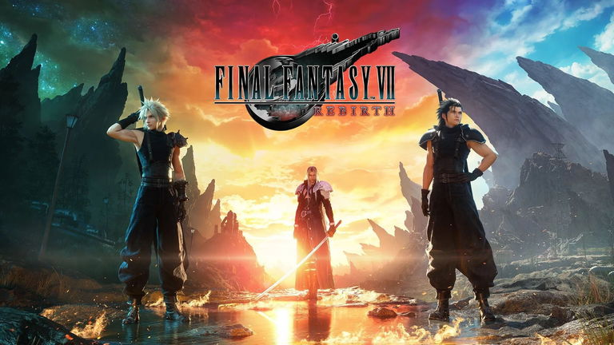

El Regreso de Final Fantasy VII: Rebirth ya tiene fecha de lanzamiento
Final Fantasy VII: Rebirth es la esperada continuación del remake de uno de los juegos más icónicos de todos los tiempos. Square Enix ha confirmado su fecha de lanzamiento, emocionando a los fans con un nuevo vistazo a la historia, personajes y mecánicas de juego mejoradas.
🎮 Novedades en la jugabilidad
- Mundo más abierto y exploración ampulada.
- Batallas más dinámicas con nuevas combinaciones de ataques en equipo.
- Expansión de la historia con detalles inéditos sobre personajes y eventos cruciales.
🏹 Historia y personajes
La historia continuará tras los eventos de Final Fantasy VII Remake, con Cloud Strife y su equipo enfrentándose a desafíos aún mayores mientras descubren los secretos del planeta y la verdadera amenaza que representa Sephiroth.
🎥 Tráiler oficial
No te pierdas el tráiler:
⬅ Volver a noticias